🎯Назначение
Программа позволяет добавить систему разрушения костюмов в зависимости от здоровья персонажа.
💡Как это работает
Вы скачиваете мод, в котором можно переключать элементы костюма (например, моды от Lewd Lad). Далее, шаг за шагом с помощью программы вы настраиваете разные состояния костюма, которые отвечают за разный уровень здоровья. Можно настроить несколько вариантов костюма со своими вариантами разрушения. В игре, в зависимости от уровня здоровья персонажа, костюм будет меняться автоматически.
Общий принцип: когда вы настраиваете костюмы, программа создаёт «пресеты» — снимки состояния ваших переменных для каждого этапа разрушения. При применении системы здоровья программа жёстко прописывает эти значения в настройках мода. Выбранные переменные теперь будут переключаться только системой здоровья в зависимости от уровня HP персонажа.
📥Подготовка и установка
- Скачайте архив и распакуйте его в удобное место.
- В архиве содержатся файлы локализации — английская и русская. Локализация хранится в JSON-файлах, поэтому вы легко можете добавить свой язык: попросите нейросеть перевести
lang_en.json, сохраните перевод в файл, например lang_jp.json, и программа автоматически подхватит его в меню Language.
🛠Вкладка 1 — Подготовка
- Укажите путь к папке ZZMI и нажмите Сохранить.
Важно! Нужно указать именно путь к папке ZZMI, где хранится файл d3dx_user.ini.
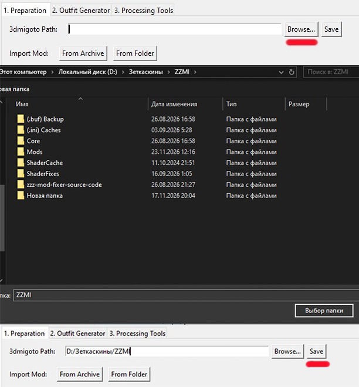
- Импортируйте мод — укажите путь к папке или выберите архив (программа распакует его автоматически).
Важно! Для распаковки .rar нужен установленный 7-Zip. Если его нет — распаковывайте .rar вручную.
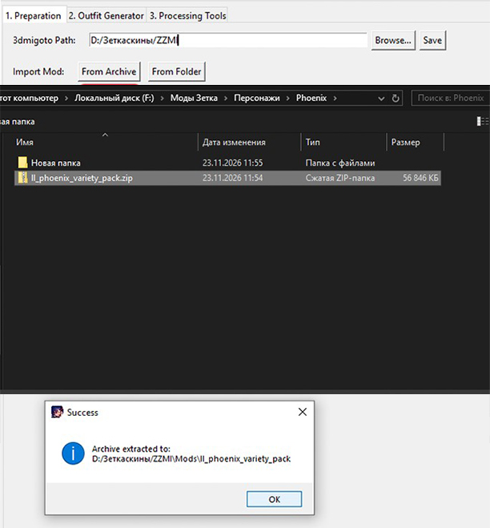
Если мод уже в папке Mods — просто нажмите Сканировать папку.
- Нажмите Сканировать папку, найдите папку с модом и выберите нужный
.ini-файл. При выборе ниже отобразится список переменных.
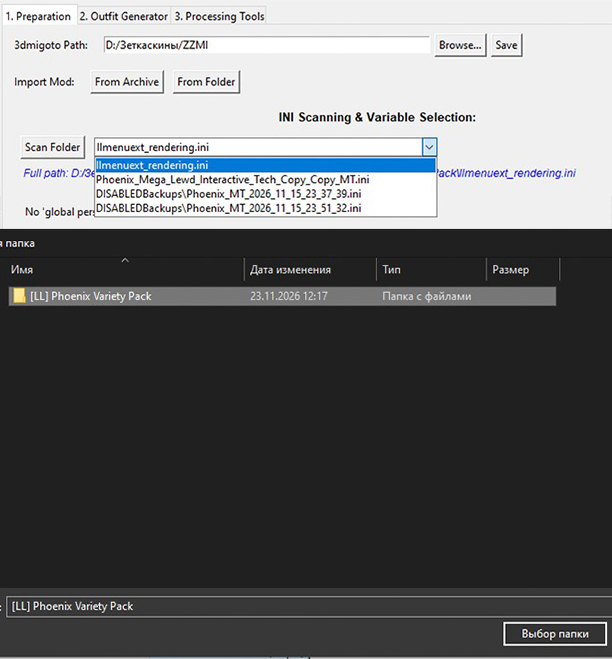
- Если знаете, что какие-то переменные вам не понадобятся (например, отвечающие за UI мода или за цвет костюма) — уберите с них галочку.
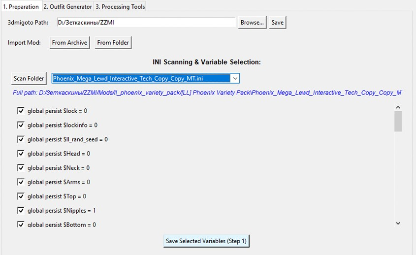
- Нажмите Сохранить выбранные переменные — теперь сформирован список переменных, которые программа будет читать из
d3dx_user.ini.
👗Вкладка 2 — Генератор костюмов
Порядок действий:
- В игре выберите нужный костюм.
- Нажмите F10, чтобы текущее состояние переменных записалось в
d3dx_user.ini.
- В программе нажмите Сохранить шаг.
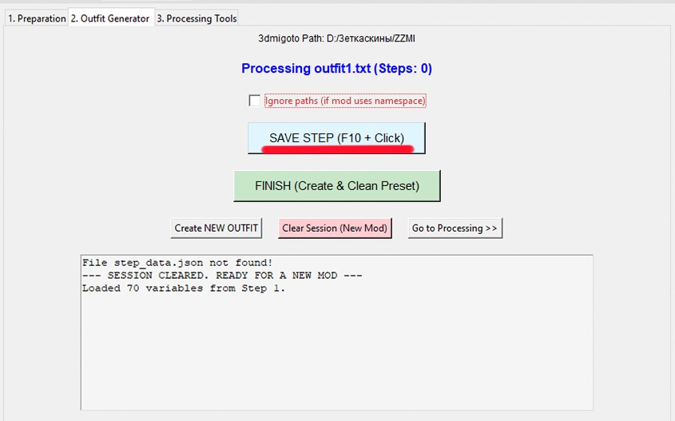
- Переключите состояние костюма в игре, снова нажмите F10.
- Нажмите Сохранить шаг.
Повторяйте, пока не запишете все этапы разрушения. Затем нажмите Готово.
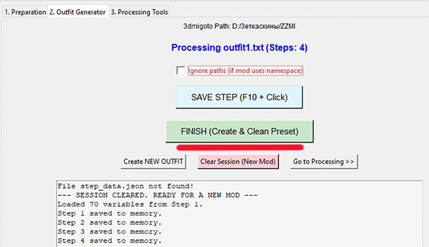
Важно! Если не нажать Готово, костюм не сохранится.
🧹 Очистка неиспользуемых переменных
После нажатия Готово программа проанализирует шаги и может предложить очистить неиспользуемые переменные (те, что не менялись от шага к шагу, например $color).
- Зачем? Если оставить такую переменную — система здоровья «залочит» её на одном значении. Очистка убирает её из жёстких настроек, позволяя менять другими способами (Рандомайзером, горячими клавишами мода).
- Что нажимать?
- Если создаёте один костюм — жмите Да, код станет чище.
- Если создаёте несколько костюмов для объединения — жмите Нет. Это сохранит единую структуру переменных, обеспечив стабильное объединение.
Для нового костюма нажмите Создать ещё костюм и повторите настройку. Не забудьте снова нажать Готово!
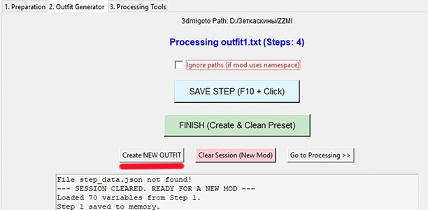
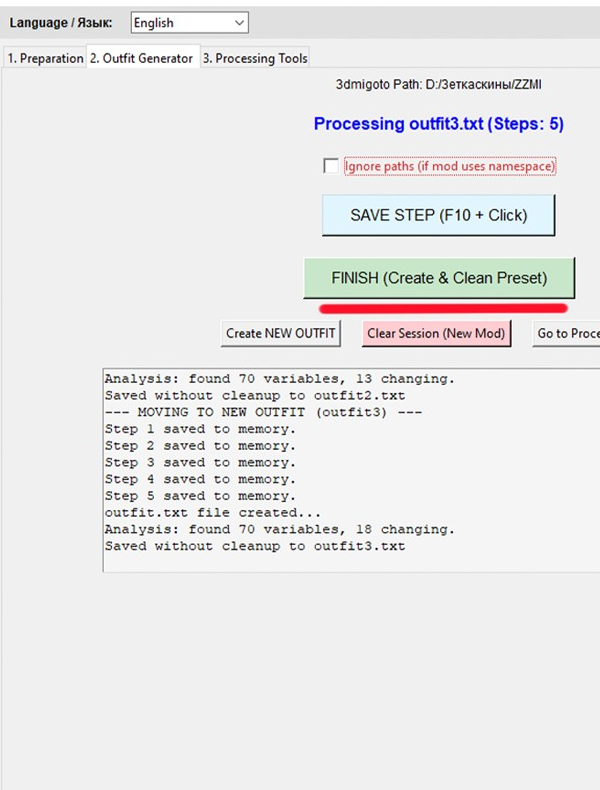
⚙️Вкладка 3 — Инструменты обработки
Система здоровья
- Выберите
.ini-файл (если нужного нет — нажмите Обновить).
- Нажмите Найти по хэшу — программа определит имя персонажа. Если не найдено — введите вручную.
Важно! Имя должно совпадать с именем в characters.ini по пути \ZZMI\Core\ZZMI\Libraries\HP bar. Обычно программа подставляет имя сама.
Нажмите Применить систему здоровья.
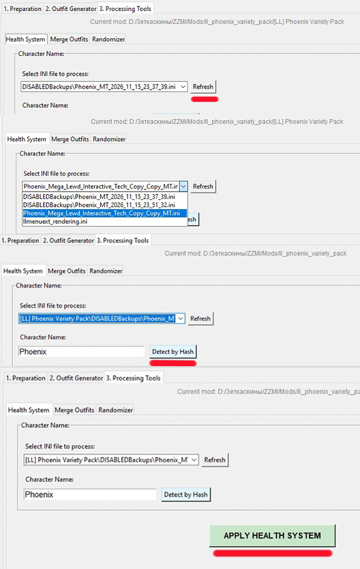
Если создан один костюм — готово. Если несколько — переходите к объединению.
Объединение костюмов
- Нажмите Обновить список файлов. Нужные файлы будут с цифрами в конце названия.
- Отметьте галочками нужные файлы.
- При желании переименуйте итоговый файл и выберите клавиши переключения (по умолчанию
z и x).
- Нажмите Объединить выбранные INI.
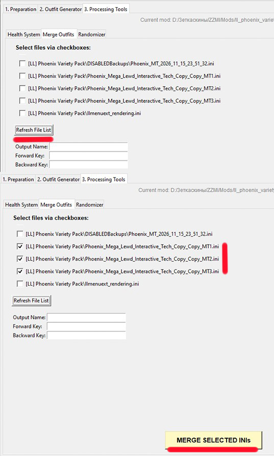
🎲Рандомайзер
Если костюмов несколько и вы хотите, чтобы они менялись самостоятельно — перейдите на вкладку Рандомайзер.
- Выберите переменную
$swapsetmergecostume (подсвечена синим сверху) — это переключатель костюмов.
- Настройте Базовый интервал — основное значение рандомайзера, применяется ко всем выбранным переменным.
- В Параметрах введите значения: для 2 костюмов —
0 1, для 3 — 0 1 2 и т.д.
- Нажмите Добавить выбранные.
- Нажмите Применить рандомайзер.
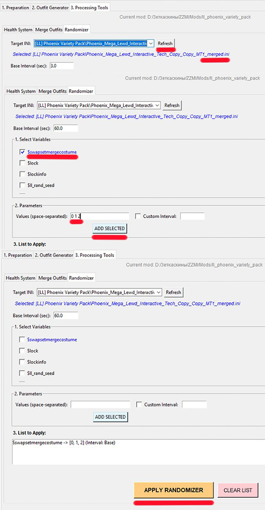
Галочка «Свой интервал» нужна, когда несколько переменных переключаются с разной частотой. Например, $color: найдите в списке, поставьте галочку, введите значения (0 1 2), отметьте «Свой интервал» и укажите время (например, 30 сек).
⚠️ Важное правило: чтобы рандомайзер менял переменные, их нужно
убрать из списка обработки Системой здоровья на Вкладке 1.
Пример: если хотите, чтобы $color менялся рандомно, уберите с него галочку на Вкладке 1 перед сохранением и переходом на Вкладку 2. После создания костюмов вернитесь на Вкладку 1, выберите только $color, сохраните и переходите на Рандомайзер.
✅Всё готово!
Можете приступать к следующему моду: либо снова на Вкладке 1 выберите архив/папку, либо найдите мод в папке Mods.
Использован мод Phoenix OG & Bunny Lewd Variety Pack by Lewd Lad
🎯Purpose
The program allows you to add a costume destruction system based on the character's health level.
💡How It Works
You download a mod that allows you to switch costume elements (e.g., mods by Lewd Lad). Then, step by step using the program, you configure different costume states corresponding to different health levels. You can set up several outfit variations with their own destruction stages. In-game, depending on the character's health level, the outfit will change automatically.
General Principle: when you set up outfits, the program creates "presets" — snapshots of your variables' states for each destruction stage. When applying the health system, the program hardcodes these values into the mod's settings. The variables you selected will now be controlled only by the health system, depending on the character's HP level.
📥Preparation and Installation
- Download the archive and extract it to a convenient location.
- The archive contains localization files — English and Russian. Localization is stored in JSON files, so you can easily add your own language: ask a neural network to translate
lang_en.json, save the translation as e.g. lang_jp.json, and the program will pick it up automatically in the Language menu.
🛠Tab 1 — Preparation
- Specify the path to the ZZMI folder and click Save.
Important! Must be the ZZMI folder where the d3dx_user.ini file is stored.
- Import the mod — specify a folder path or select an archive (extracted automatically).
Important! Extracting .rar requires 7-Zip. Without it, extract .rar manually.
If the mod is already in Mods — just click Scan Folder.
- Click Scan Folder, find your mod's folder, select the desired
.ini file. A list of variables will appear below.
- If you know some variables won't be needed (e.g., mod UI or outfit color) — uncheck them.
- Click Save Selected Variables — now the program has the list of variables it will read from
d3dx_user.ini.
👗Tab 2 — Outfit Generator
Sequence of actions:
- Select the desired outfit in the game.
- Press F10 to write current variable states to
d3dx_user.ini.
- Click Save Step in the program.
- Switch the outfit state in the game and press F10 again.
- Click Save Step.
Repeat until all destruction stages are recorded. Then click Finish.
Important! If you don't click Finish, the outfit will not be saved.
🧹 Cleaning Up Unused Variables
After clicking Finish, the program analyzes your steps and may offer to clean up unused variables (those not changed between steps, e.g. $color).
- Why? If left in, the health system will "lock" the variable to one value. Cleanup removes it from hardcoded health settings, letting you change it other ways (Randomizer, mod hotkeys).
- What to click?
- If creating one outfit — click Yes, code becomes cleaner.
- If creating multiple outfits for merging — click No. This preserves a unified variable structure for stable merging.
To create another outfit — click Create New Outfit and repeat. Don't forget to click Finish again!
⚙️Tab 3 — Processing Tools
Health System
- Select the
.ini file (if not listed — click Refresh).
- Click Detect by Hash — the program will detect the character's name. If not found — enter it manually.
Important! The name must match the one in characters.ini at \ZZMI\Core\ZZMI\Libraries\HP bar. Normally the program fills it in automatically.
Click Apply Health System.
If only one outfit — done. If several — proceed to merging.
Merging Outfits
- Click Refresh File List. The needed files will have numbers at the end.
- Check the boxes for the files to merge.
- Optionally rename the output file and choose switching keys (default
z and x).
- Click Merge Selected INIs.
🎲Randomizer
If you have multiple outfits and want them to change independently — open the Randomizer tab.
- Select the
$swapsetmergecostume variable (highlighted in blue at the top) — the outfit switcher.
- Set the Base Interval — the main randomizer value, applied to all selected variables.
- In Parameters enter values: for 2 outfits —
0 1, for 3 — 0 1 2, etc.
- Click Add Selected.
- Click Apply Randomizer.
The "Custom Interval" checkbox is for when several variables switch at different frequencies. E.g., $color: find it in the list, check it, enter values (0 1 2), check "Custom Interval" and set the time (e.g., 30 sec).
⚠️ Important rule: for the randomizer to change variables, they must be
removed from the Health System processing list in Tab 1.
Example: if you want $color to change randomly, uncheck it in Tab 1 before saving and switching to Tab 2. After creating outfits, return to Tab 1, select only $color, save, and go to the Randomizer.
✅All Done!
You can proceed to the next mod: either select an archive/folder in Tab 1 again, or find the mod in the Mods folder.
Mod usage Phoenix OG & Bunny Lewd Variety Pack by Lewd Lad